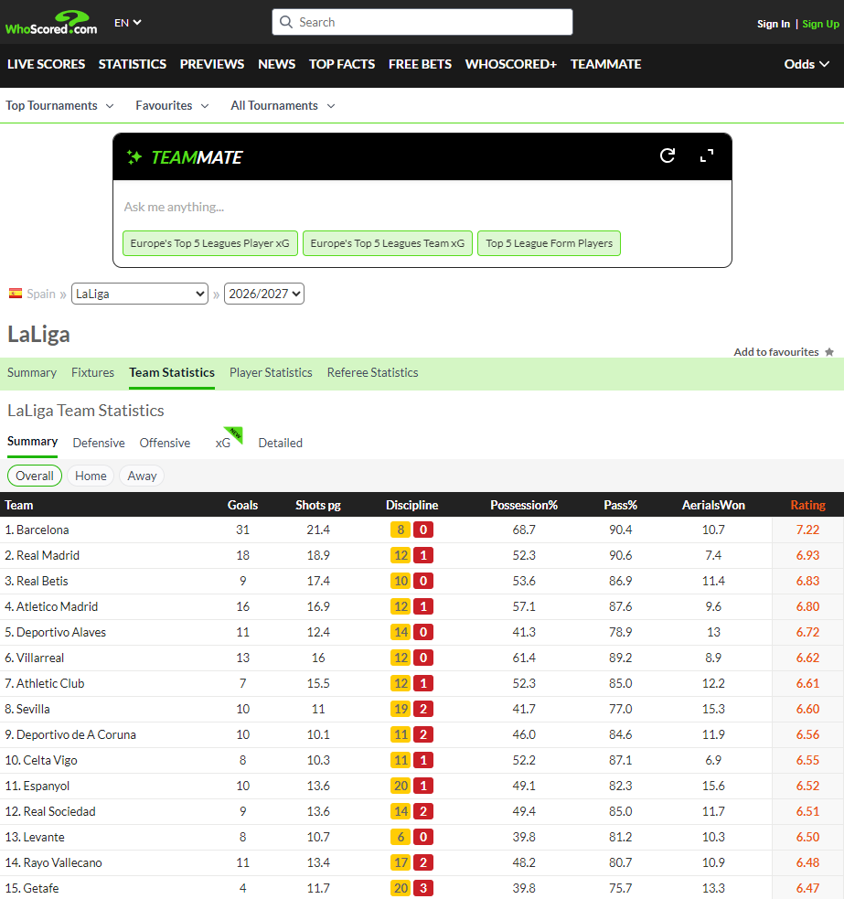
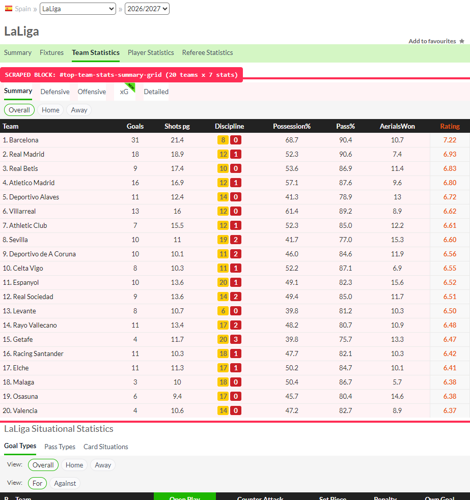

Scrape design
WhoScoredLaLiga 2026/2027stage 25662scope: tournament team tables
How the scrape runs
Every table on that page is drawn by JavaScript from /statisticsfeed/1/getteamstatistics. We call the endpoint and skip the page entirely.
GET https://www.whoscored.com/statisticsfeed/1/getteamstatistics ?stageId=25662 # the tournament season, one stage &category=summaryteam # summaryteam | xg-teamstats | 16 detailed categories &subcategory=all # all | defensive | offensive | summary &statsAccumulationType=0 # 0 per game, 1 per 90 min, 2 every X min, 3 total &field=Overall # Overall | Home | Away &formation=&timeOfTheGameStart=&timeOfTheGameEnd= &teamIds=&against=&tournamentOptions=&incPens= &sortBy=Rating&sortAscending=&page=&numberOfTeamsToPick=&isCurrent=true
The page issues exactly this request when a reader opens a tab. We reproduce it rather than driving the browser.
| Parameter | Selects | Values we send |
|---|---|---|
| stageId | The tournament season | 25662 |
| category | The data family | summaryteam, xg-teamstats, detailed category |
| subcategory | The summary panel | all, defensive, offensive, summary |
| statsAccumulationType | The unit of every number | 0 per game, 1 per 90 min, 2 every X min, 3 total |
| field | The venue split | Overall, Home, Away |
| formation | The shape filter | empty, or one of 17 formations |
| timeOfTheGame* | The minute window | empty for the full match, else 0 to 90 in steps of 5 |
| against, teamIds | Comparison and subset | empty for the full table |
Plain HTTP clients are refused
Symptom. python-requests and curl get 403 Forbidden on every call, with correct headers.
Cause. The edge reads the TLS handshake fingerprint, so the headers never matter.
Fix. curl_cffi with impersonate="chrome". One dependency, and it works.
A busy IP gets a page instead of data
Symptom. 200 OK, Content-Type text/html, 773 bytes, after a burst of requests.
Cause. A client JS challenge on the page posts to /api/v1/ingest and flags the address.
Fix. Detect the page, back off, retry. It clears in minutes.
The burst limit is the one that bit us
While capturing this deck the feed returned the gate page from both the script and the browser, while the rendered page still showed correct numbers.
So the scrape runs single-flight with a pause between calls, not a fan-out.
raw = response.content.lstrip(b"\xef\xbb\xbf").lstrip() if raw[:1] not in (b"{", b"["): # 200 plus HTML means the gate page raise WhoscoredError("fingerprint gate") # retry with backoff, do not parse rows = json.loads(response.text.lstrip("\ufeff"))["teamTableStats"]
The gate page and the real payload share a content type, and both start with a byte order mark. The first real byte is the only reliable test. Without it, the parser reads HTML as JSON and the run dies on a decode error that says nothing useful.
A whole season of team tables costs less than a minute of polite traffic. The Detailed panel is the only part that needs its own schedule.
What we get back
A team row carries 23 fields. The page prints 10 of them. The other 13 are identifiers we need and the page never shows.


Solid chips build the eight columns on screen. Dashed chips exist only in the JSON. That includes teamId, the tournament and region identifiers, and the match count, which is the key we join on and the filter we need later.
| Column on screen | Barcelona | Payload field |
|---|---|---|
| Goals | 31 | goal |
| Shots pg | 21.4 | shotsPerGame |
| Discipline | 80 | yellowCard, redCard |
| Possession% | 68.7 | possession |
| Pass% | 90.4 | passSuccess |
| AerialsWon | 10.7 | aerialWonPerGame |
| Rating | 7.22 | rating |
Eight payload fields, seven columns. The discipline cell prints 8 and 0 as the string "80", so we store yellowCard and redCard separately and never parse that cell.
| Column on screen | Leader | Note |
|---|---|---|
| Shots pg | 16.7 | shots faced per game |
| Tackles pg | 20 | the sort column |
| Interceptions pg | 8 | one of four defensive events |
| Fouls pg | 14.3 | one of four defensive events |
| Offsides pg | 1.9 | one of four defensive events |
| Rating | 6.42 | the leader is Racing Santander |
Same endpoint with subcategory=defensive. The first row is a different team, because the panel sorts by tackles instead of rating.
| Column on screen | Barcelona | What it counts |
|---|---|---|
| Shots pg | 21.4 | all attempts |
| Shots OT pg | 8.3 | attempts on target |
| Dribbles pg | 14.7 | completed take-ons |
| Fouled pg | 9.4 | times fouled |
| Rating | 7.22 | same rating as the Summary tab |
subcategory=offensive returns five columns, sorted by shots. Shots on target appears here and nowhere else in the team tables.
| Column on screen | Barcelona | What it counts |
|---|---|---|
| xG | 28.54 | expected goals, summed over the season |
| Goals* | 29 | the star flags a footnote on the page |
| xGDiff | 0.46 | Goals minus xG |
| Shots | 150 | season total, not a per-game rate |
| xG/Shots | 0.19 | quality per attempt |
| Rating | 7.22 | same rating as the Summary tab |
This panel reports 29 goals for Barcelona where Summary reports 31. It is a second category, xg-teamstats, with its own denominators, so we store both columns and flag the difference instead of reconciling it.
| Field | Barcelona row | On the page |
|---|---|---|
| name | "" | no |
| teamId | 65 | link only |
| teamName | Barcelona | yes |
| teamRegionName | Spain | no |
| tournamentId | 4 | no |
| tournamentName | LaLiga | no |
| regionCode | es | no |
| isOpta | true | no |
This is the block that decides whether the API is worth its trouble. Seven of these eight fields are missing from the rendered page.
| Field | Barcelona row | Behaviour |
|---|---|---|
| tournamentRegionId | 206 | stable |
| tournamentRegionCode | es | stable |
| tournamentRegionName | Spain | stable |
| seasonId | 0 | always zero |
| seasonName | null | always null |
| apps | 7 | in the payload, not on the page |
| ranking | 1 | printed as the "1." prefix |
The payload never tells us the season. stageId is the season identifier, and teamId plus stageId is the natural key for a team row.
| Field | Barcelona row | Precision on the page |
|---|---|---|
| goal | 31.0 | 31 |
| yellowCard | 8.0 | merged into one cell |
| redCard | 0.0 | merged into one cell |
| shotsPerGame | 21.428571 | 21.4 |
| aerialWonPerGame | 10.714286 | 10.7 |
| possession | 0.687286 | 68.7 |
| passSuccess | 0.904159 | 90.4 |
| rating | 7.22 | 7.22 |
The payload keeps six decimals and the page rounds to one. Two fields are fractions, not percentages. We store what the payload sends and format on read.
| Gap | Consequence |
|---|---|
| The season, as an identifier | stageId is the only season key in the response |
| Paging values | every field reads zero, and one page holds the whole tournament |
| Fixtures and results | a separate endpoint, out of scope for this deck |
| Player rows | a separate endpoint, out of scope for this deck |
| Shot and event level data | only inside match pages, which the earlier research parked |
| A flag for the gate page | 200 with HTML is the only signal, so we test the first byte |
Next
The client already builds this request and detects the gate. What is missing is the tournament and stage list, so a season can be named rather than hardcoded, and the table columns for the four category sets.
12 requests per season20 teams per tab23 fields per row